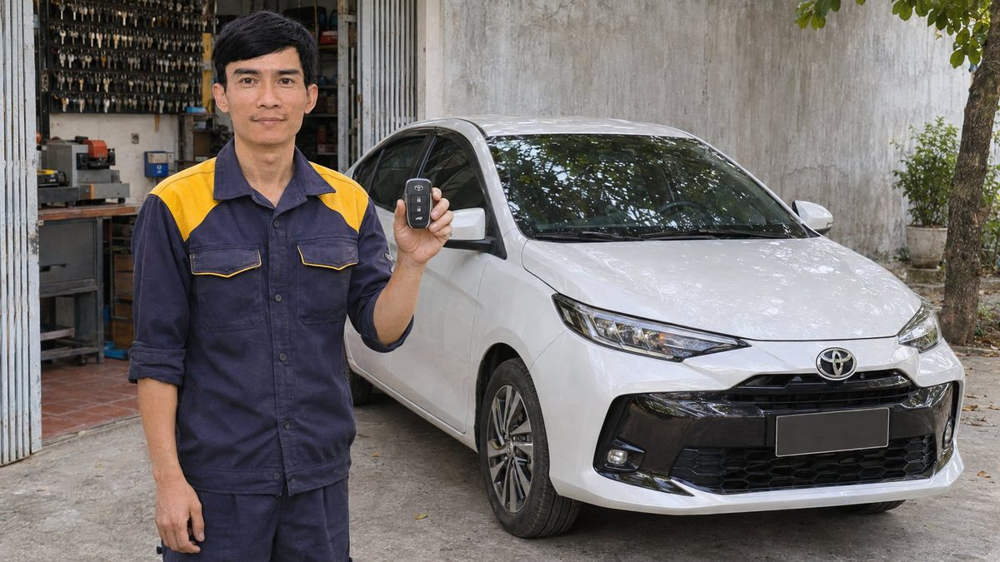
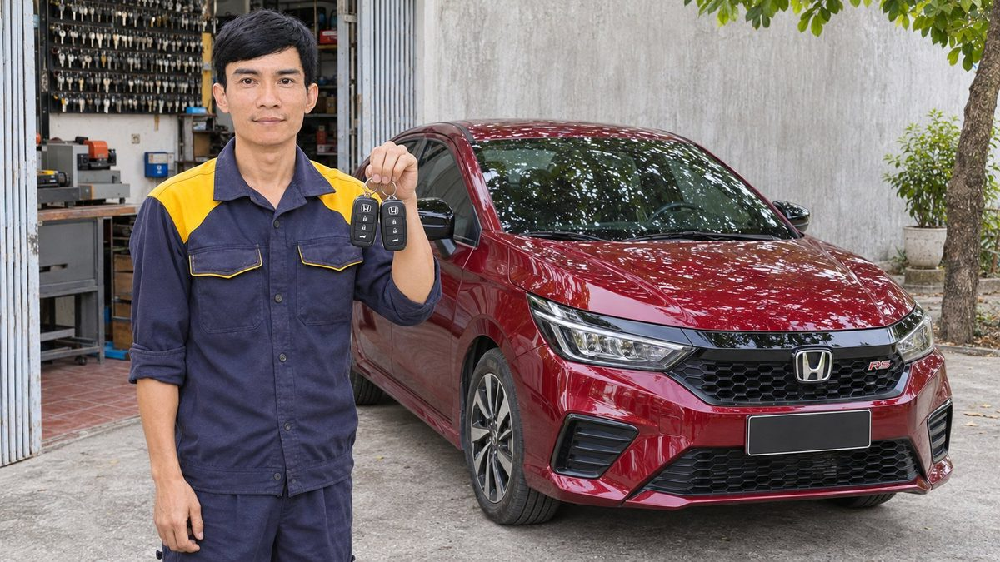
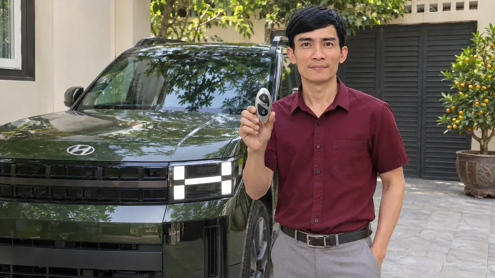
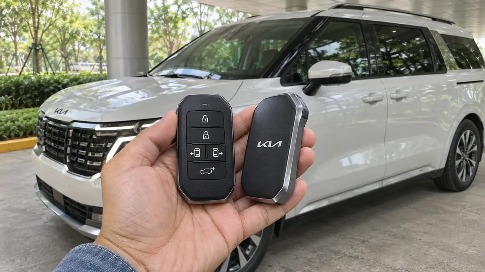
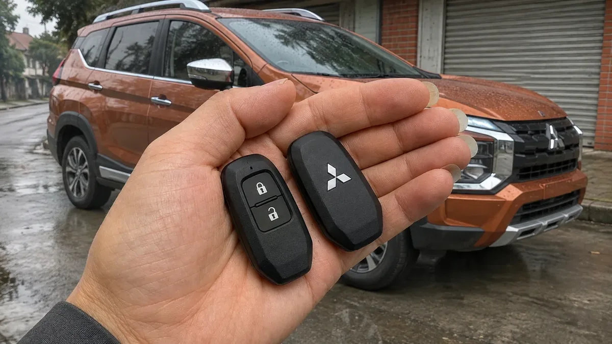
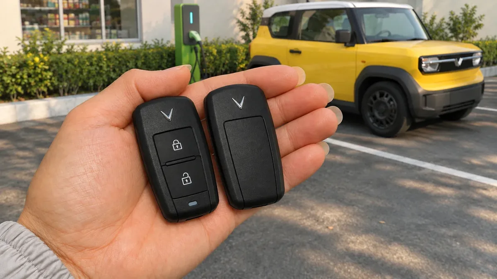
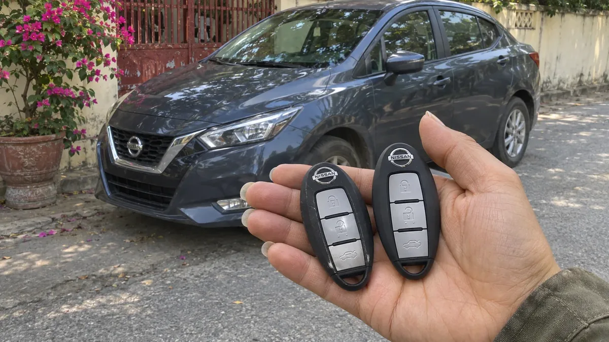
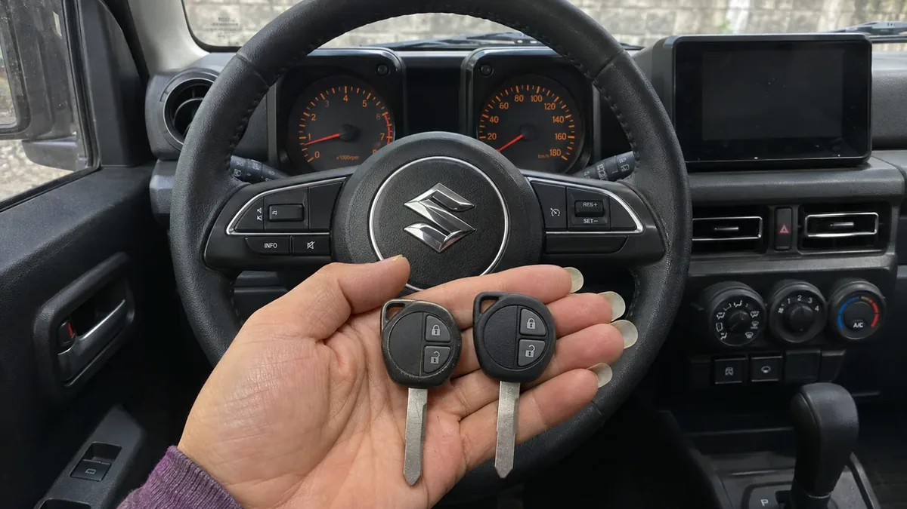
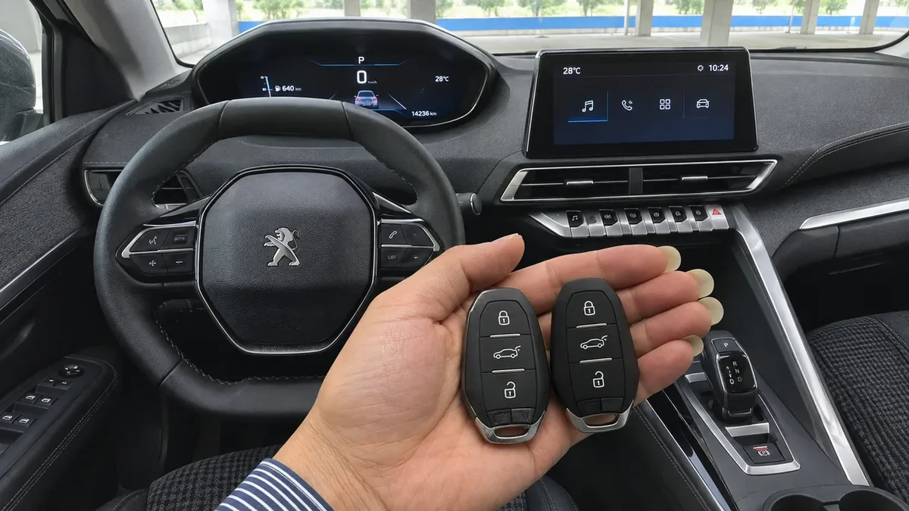

Chìa để trong xe
Cho biết mẫu xe, đời xe và tình trạng cửa. Trao đổi yêu cầu mở xe để lấy lại chìa.
Khóa ô tô · Quang Huy
Tiếp nhận ô tô mọi hãng. Kiểm tra phương án theo hãng, mẫu và đời xe.
Gửi hãng, mẫu, đời xe, tình trạng còn chìa và vị trí xe.
Chi phí phụ thuộc loại khóa, tình trạng, linh kiện và vị trí. Quang Huy trao đổi giá dự kiến cùng phí di chuyển nếu có. Nếu cần xem trực tiếp, hai bên thống nhất giá trước khi làm.
Lào Cai, Cam Đường, Sa Pa và vùng lân cận trong phạm vi 50 km. Gửi vị trí để xác nhận tuyến và khung giờ.
Xem khu vực phục vụCho biết mẫu xe, đời xe và tình trạng cửa. Trao đổi yêu cầu mở xe để lấy lại chìa.
Gửi hãng, mẫu và đời xe. Thợ kiểm tra phương án làm lại chìa phù hợp với hệ khóa.
Mô tả rõ chìa không xoay, cửa không mở hay xe không nhận chìa để xác định hạng mục cần kiểm tra.
Trao đổi lại hạng mục đã làm, thử thao tác đóng mở hoặc sử dụng chìa phù hợp với công việc. Hỏi rõ cách sử dụng và điều kiện hỗ trợ sau dịch vụ được thỏa thuận cho ca của bạn.
Nếu chìa còn bên trong, yêu cầu có thể chỉ là mở cửa lấy chìa. Nếu đã mất hết, có thể cần thêm hạng mục làm chìa phù hợp với mẫu xe.
Quang Huy tiếp nhận yêu cầu cho ô tô mọi hãng. Khả năng thực hiện được kiểm tra theo mẫu, đời xe và hệ khóa cụ thể.
Ảnh thực tế
Ảnh thực tế khi làm chìa tận nơi. Bấm vào ảnh để xem to. Gửi hãng, mẫu và đời xe để kiểm tra ca của bạn.









Nhận mọi hãng xe
Quang Huy nhận làm chìa, sửa khóa và sửa điều khiển (remote) cho xe của hầu hết các hãng trên thị trường — từ xe phổ thông đến xe sang. Gửi hãng, mẫu và đời xe để kiểm tra ca của bạn.
Và các hãng xe khác trên thị trường chưa liệt kê hết ở đây — kể cả những mẫu xe mới ra. Cứ gửi hãng, mẫu và đời xe, Quang Huy kiểm tra rồi báo lại.
Hỏi đáp
Quang Huy nhận làm lại chìa khi mất hết. Khả năng xử lý được kiểm tra theo mẫu khóa hoặc dòng xe. Thợ xác nhận quyền sử dụng tài sản khi tiếp nhận.
Thời gian phụ thuộc vị trí, tuyến đường và lịch tiếp nhận. Gọi hoặc nhắn Zalo để xác nhận giờ có thể đến trước khi hẹn.
Chi phí tùy loại khóa, tình trạng, linh kiện và vị trí. Quang Huy trao đổi giá dự kiến cùng phí di chuyển nếu có. Khi cần xem trực tiếp, hai bên thống nhất giá trước khi làm.
Quang Huy tiếp nhận 24/7 và phục vụ Sa Pa cùng các khu vực đã nêu. Gửi vị trí để xác nhận tuyến và thời gian có thể đến.
Trao đổi trực tiếp với Quang Huy
Gọi khi cần thợ gấp. Nhắn Zalo để gửi loại khóa, vị trí và giờ bạn muốn hẹn.